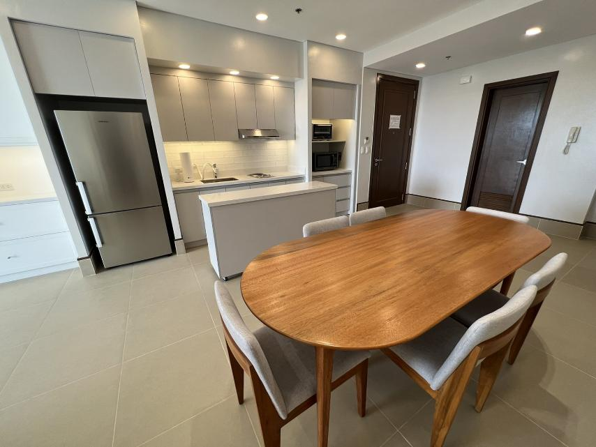
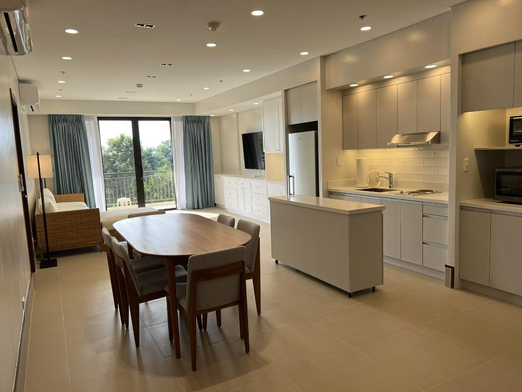

Casa San Maza Furniture & Accessories, Inc. is an interior design and furniture-making company that creates thoughtfully designed spaces and custom furniture. They combine functionality, craftsmanship, and timeless aesthetics to bring unique interior concepts to life.

